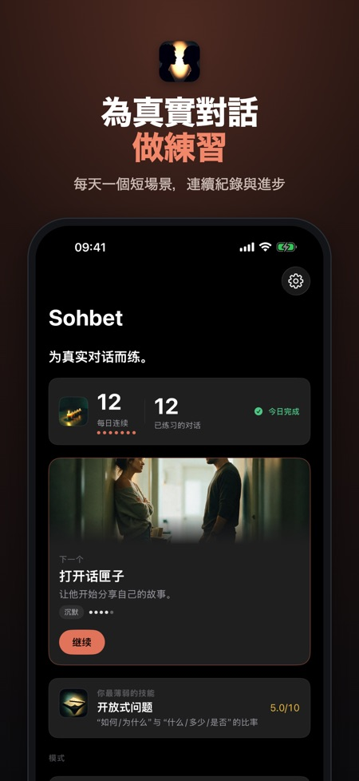

訓練與他人溝通交談的方式. 無需訂閱即可體驗兩次對話，包含即時對話、語音模式與完整評估報告。 無需註冊帳號，無需電子郵件。 現已支援 41 種語言，Pro 版首週為試用期。 .

Sohbet 是一款讓你透過與會對你做出真實反應的人對話，來鍛鍊社交技巧的遊戲。
坐在你對面的是由人工智慧扮演的角色，它不會主動迎合你。 如果你問封閉式問題，它會感到無趣；如果你過度聊自己，它會失去興趣。 只有在適當的時機問出對的問題，它才會敞開心扉。 螢幕頂部的興趣條會即時顯示反應，若降至零，對話即告結束。
對話結束時
評估報告不會一開始就給予讚美，而是逐句分析：你做了什麼、該舉動為何有效或無效，以及你可以改說什麼。 沒有「再開放一點」這種泛泛之詞，每條意見都對應到特定的對話輪次與你實際輸入的句子，建議的台詞也是你在現實中真正能使用的表達。
評分標準相當嚴格。 一般的對話通常得分在 50 至 60 分之間，超過 80 分代表表現確實優異。 對所有內容都給予讚美的評估者無法教你任何東西。
使用語音交談
你可以用說的代替打字。 角色聲音會根據情境設定為男性或女性。 你的說話節奏與停頓也會納入評估，就如同在真實對話中一樣。
16 個情境劇本
咖啡館隔壁桌、家庭派對、工作晚餐、坐在陌生人旁、禮貌地打斷他人、婉拒邀請。 劇本難度由淺入深。 你可以針對不同的性格重新挑戰同一個情境——相同的場景，應對難度更高的對象。
根據你的短板生成情境
經過幾次對話後，就能清楚看出你缺乏哪方面的技巧。 只需點擊一下，即可生成專為改善該特定技巧而設計的新情境。
歷史紀錄
每次對話都會保留逐字稿與評估報告。 你可以觀察自己重複出現的習慣——無論是總是在同一個地方卡住，還是正在逐漸進步。
隱私保護
無需註冊帳號，無需電子郵件。 你的對話紀錄與評估報告儲存在你的手機上。 對話期間，文字會經由我們的伺服器傳送給負責產生角色回覆與評估的 AI 模型，語音會傳送給語音辨識服務轉成文字。 我們的伺服器不會保存這些文字，但有兩個例外：出錯的請求會保留 7 天，以便我們修正問題；只有在你於設定中主動開啟時，一小部分對話樣本才會保留 90 天，用於改進 App。 兩者都不會與你的身分連結。 語音絕不會儲存為檔案。
訂閱服務
無需訂閱即可進行兩次對話，包含真人感角色、語音模式與完整評估報告。 Sohbet Pro 採月費制，首週為試用期：解鎖對話次數限制，並提供能綜合分析所有對話的教練報告，以及針對短板生成的專屬情境。
訂閱會在每個週期結束時自動續訂。 你可以隨時前往「設定」>「Apple 帳號」>「訂閱項目」進行取消。